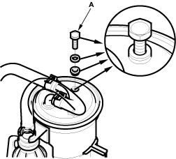
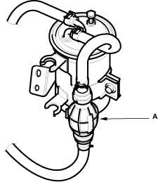

Air must be bled from the fuel after disassembling the fuel system for system for service and after run out of the fuel.
See the following for the procedure.
- Fill the fuel tank with fuel.
- Remove the fuel filter air bleed bolt and replace the washer with a new one.
- Loosely screw the air bleed bolt (A) into the threaded hole in the fuel filter until the 2 or 3 threads at the cutout of the threaded part of the bolt come out.

- Remove the fuel hand primer from the hose clip.
- Squeeze the fuel hand primer (A) and operate it 40 to 50 times. Fuel with air bubbles will flow out.

- When the air bubbles cease to appear, tighten the air bleed bolt to the specified torque (9 Nm (0.9 kgf/m, 7 lbf/ft)).
- After tightening the air bleed plug, operate the fuel hand primer unit it becomes hard.
- Stop bleeding when the fuel hand primer becomes hard and crank the engine.
- If the engine does not start, operate the hand primer again until it becomes hard.
NOTE:
- Note that the continuous cranking time of the engine must be 30 seconds to shorter at one operation. Cranking the engine for longer than 30 seconds can cause damage to the starter and fuel pump.
- Do not reuse the copper washer of the air bleed bolt. Replace it with a new one whenever it is removed.